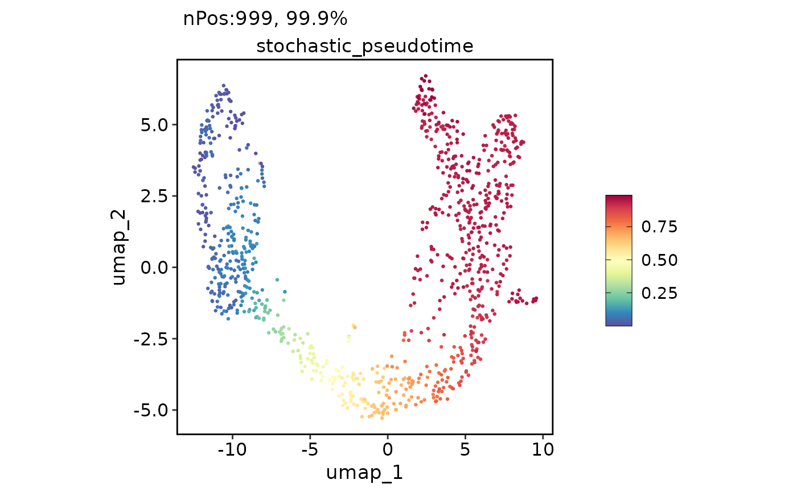
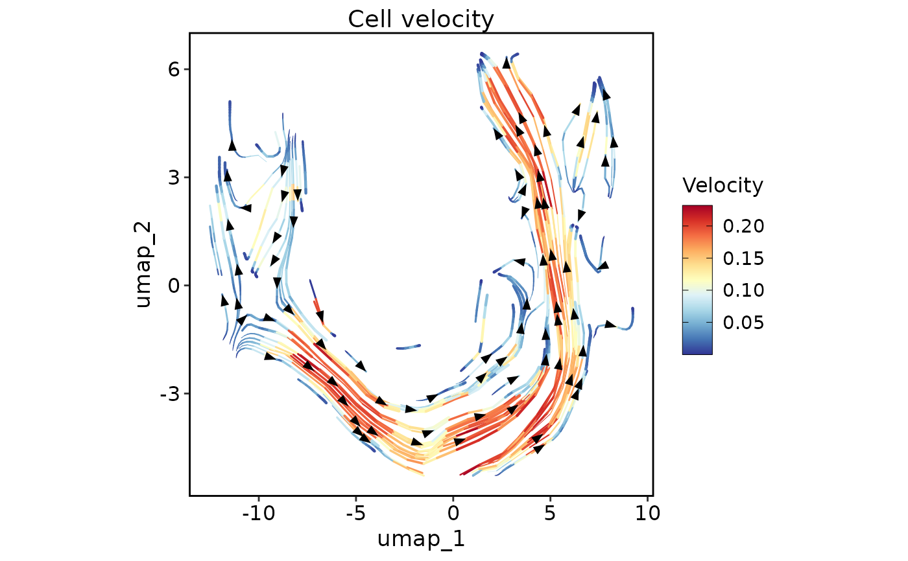
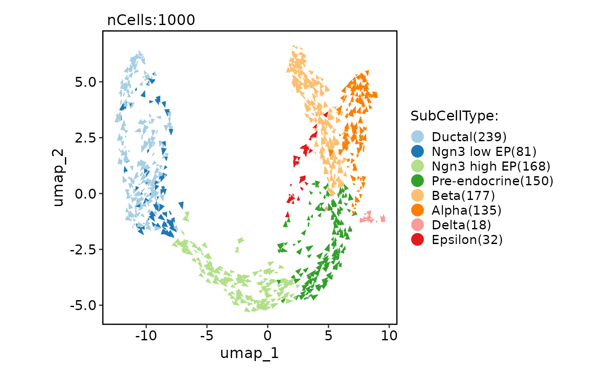
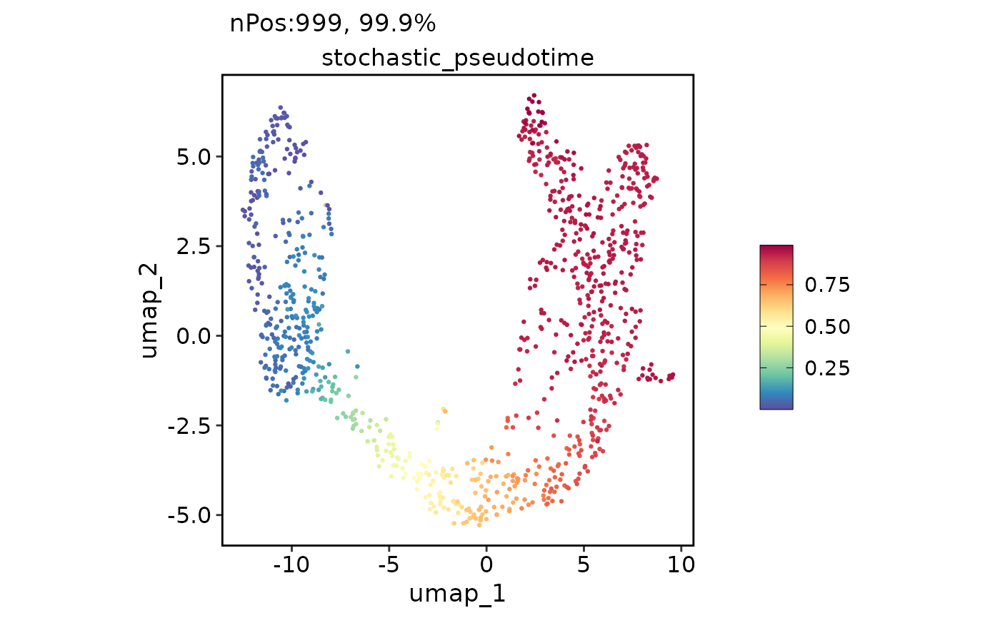
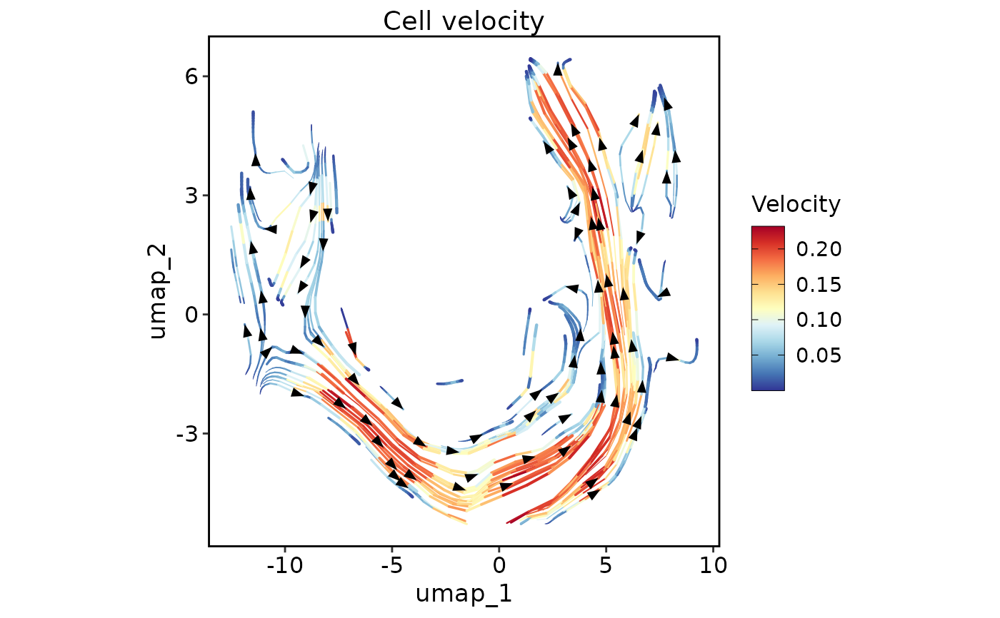
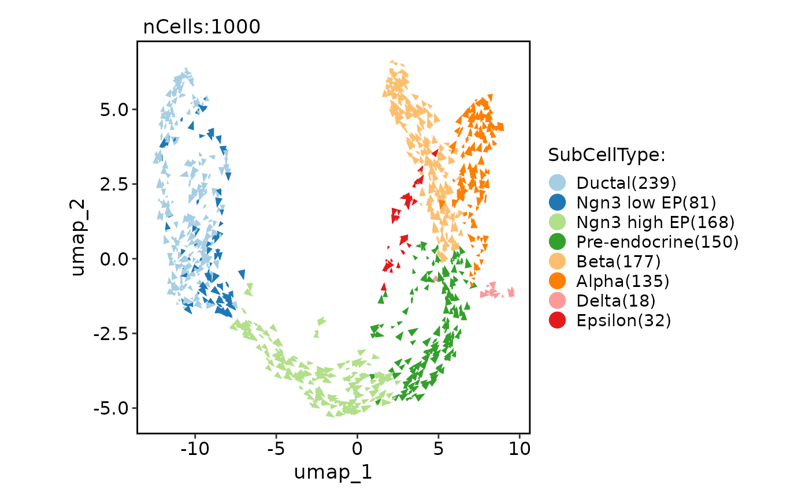

scVelo is a scalable toolkit for RNA velocity analysis in single cells. This function performs scVelo workflow in R by reticulate.
Usage
RunSCVELO(
srt = NULL,
assay_X = "RNA",
slot_X = "counts",
assay_layers = c("spliced", "unspliced"),
slot_layers = "counts",
adata = NULL,
h5ad = NULL,
group_by = NULL,
n_jobs = 1,
linear_reduction = NULL,
nonlinear_reduction = NULL,
basis = NULL,
mode = "stochastic",
fitting_by = "stochastic",
magic_impute = FALSE,
knn = 5,
t = 2,
min_shared_counts = 30,
n_pcs = 30,
n_neighbors = 30,
approx = TRUE,
stream_smooth = NULL,
stream_density = 2,
arrow_length = 5,
arrow_size = 5,
arrow_density = 0.5,
denoise = FALSE,
denoise_topn = 3,
kinetics = FALSE,
kinetics_topn = 100,
calculate_velocity_genes = FALSE,
show_plot = TRUE,
dpi = 300,
save = FALSE,
dirpath = "./",
fileprefix = "",
return_seurat = !is.null(srt)
)Arguments
- srt
A
Seuratobject.- adata
An
anndataobject. Can be created throughsrt_to_adata- h5ad
h5ad file path.
- group_by
group_by.
- n_jobs
n_jobs.
- linear_reduction
linear_reduction.
- nonlinear_reduction
nonlinear_reduction.
- basis
basis.
- mode
mode.
- fitting_by
fitting_by.
- min_shared_counts
min_shared_counts.
- n_pcs
n_pcs.
- n_neighbors
n_neighbors.
- approx
approx.
- stream_smooth
stream_smooth.
- stream_density
stream_density.
- arrow_length
arrow_length.
- arrow_size
arrow_size.
- arrow_density
arrow_density.
- calculate_velocity_genes
calculate_velocity_genes.
- dpi
dpi.
- save
save.
- dirpath
dirpath.
- fileprefix
fileprefix.
- return_seurat
Examples
data("pancreas_sub")
pancreas_sub <- RunSCVELO(srt = pancreas_sub, assay_X = "RNA", group_by = "SubCellType", linear_reduction = "PCA", nonlinear_reduction = "UMAP")
#> 'misc' slot is not converted.
#> 'tools' slot is not converted.
#> Warning: Keys should be one or more alphanumeric characters followed by an underscore, setting key from variance_stochastic_ to variancestochastic_
#> Warning: Keys should be one or more alphanumeric characters followed by an underscore, setting key from variance_velocity_ to variancevelocity_
#> Warning: 'uns: neighbors' will not be converted. You may need to convert it manually.
head(pancreas_sub[[]])
#> orig.ident nCount_RNA nFeature_RNA S_score G2M_score nCount_spliced nFeature_spliced
#> CAGCCGAAGCGATATA SeuratProject 10653 3295 0.33188155 0.54532743 10653 3295
#> AGTGTCATCGCCGTGA SeuratProject 4596 2053 -0.07156909 -0.08865353 4596 2053
#> GATGAAAAGTTGTAGA SeuratProject 14091 3864 0.08940628 0.77610326 14091 3864
#> CACAGTACATCCGTGG SeuratProject 5484 2510 -0.25927997 -0.25941831 5484 2510
#> CGGAGCTCATTGGGCC SeuratProject 7357 2674 -0.11764368 0.46237856 7357 2674
#> AGAGCTTGTGTGACCC SeuratProject 6498 2516 -0.11406432 -0.17830831 6498 2516
#> nCount_unspliced nFeature_unspliced CellType SubCellType Phase initial_size_unspliced
#> CAGCCGAAGCGATATA 1587 1063 Ductal Ductal G2M 1587
#> AGTGTCATCGCCGTGA 1199 803 Pre-endocrine Pre-endocrine G1 1199
#> GATGAAAAGTTGTAGA 2166 1379 Ngn3 low EP Ngn3 low EP G2M 2166
#> CACAGTACATCCGTGG 1339 859 Endocrine Beta G1 1339
#> CGGAGCTCATTGGGCC 976 745 Ductal Ductal G2M 976
#> AGAGCTTGTGTGACCC 822 591 Ductal Ductal G1 822
#> initial_size_spliced initial_size n_counts stochastic_self_transition stochastic_length
#> CAGCCGAAGCGATATA 10653 10653 4571.989 0.6022512 5.93
#> AGTGTCATCGCCGTGA 4596 4596 4538.002 0.4032305 19.69
#> GATGAAAAGTTGTAGA 14091 14091 4556.545 0.7582322 6.35
#> CACAGTACATCCGTGG 5484 5484 4488.308 0.3147900 8.14
#> CGGAGCTCATTGGGCC 7357 7357 4579.191 0.2901811 10.18
#> AGAGCTTGTGTGACCC 6498 6498 4593.732 0.6064023 7.93
#> stochastic_confidence stochastic_confidence_transition stochastic_root_cells stochastic_end_points
#> CAGCCGAAGCGATATA 0.8305538 0.05243316 0.0457061 0.503558587
#> AGTGTCATCGCCGTGA 0.9371346 0.13112374 0.0000000 0.001003911
#> GATGAAAAGTTGTAGA 0.8487794 0.07677199 0.1725078 0.520036434
#> CACAGTACATCCGTGG 0.7506389 0.31853369 0.0000000 0.001289744
#> CGGAGCTCATTGGGCC 0.7847933 0.19552918 1.0000000 0.063181052
#> AGAGCTTGTGTGACCC 0.8014874 0.06174603 0.0000000 0.001339154
#> stochastic_pseudotime nCount_Ms nFeature_Ms nCount_Mu nFeature_Mu nCount_stochastic
#> CAGCCGAAGCGATATA 0.03984233 4585.044 3685 892.5218 3535 165.54229
#> AGTGTCATCGCCGTGA 0.79071981 4675.374 3549 961.4076 3239 87.16008
#> GATGAAAAGTTGTAGA 0.01110781 4567.841 3666 899.8371 3414 158.98504
#> CACAGTACATCCGTGG 0.93322486 4538.791 3743 934.1198 3572 -20.10319
#> CGGAGCTCATTGGGCC 0.08549394 4573.531 3585 882.0175 3157 203.68220
#> AGAGCTTGTGTGACCC 0.07086805 4626.373 3669 899.8281 3394 152.89349
#> nFeature_stochastic nCount_variance_stochastic nFeature_variance_stochastic nCount_velocity
#> CAGCCGAAGCGATATA 1920 256.45370 789 165.54229
#> AGTGTCATCGCCGTGA 1599 -81.06340 353 87.16008
#> GATGAAAAGTTGTAGA 1805 286.26301 792 158.98504
#> CACAGTACATCCGTGG 1476 -80.43105 396 -20.10319
#> CGGAGCTCATTGGGCC 1889 150.38356 554 203.68220
#> AGAGCTTGTGTGACCC 1737 68.93910 511 152.89349
#> nFeature_velocity nCount_variance_velocity nFeature_variance_velocity
#> CAGCCGAAGCGATATA 1920 256.45370 789
#> AGTGTCATCGCCGTGA 1599 -81.06340 353
#> GATGAAAAGTTGTAGA 1805 286.26301 792
#> CACAGTACATCCGTGG 1476 -80.43105 396
#> CGGAGCTCATTGGGCC 1889 150.38356 554
#> AGAGCTTGTGTGACCC 1737 68.93910 511
names(pancreas_sub@assays)
#> [1] "RNA" "spliced" "unspliced" "Ms" "Mu"
#> [6] "stochastic" "variance_stochastic" "velocity" "variance_velocity"
ExpDimPlot(pancreas_sub, c("stochastic_length", "stochastic_confidence"))
 ExpDimPlot(pancreas_sub, "stochastic_pseudotime")

VelocityPlot(pancreas_sub, reduction = "UMAP", plot_type = "stream")

ClassDimPlot(pancreas_sub, group.by = "SubCellType", reduction = "UMAP", pt.size = NA, velocity = "stochastic")
#> Warning: Removed 1000 rows containing missing values (`geom_point()`).
#> Warning: Removed 1000 rows containing missing values (`geom_point()`).
#> Warning: Removed 3 rows containing missing values (`geom_segment()`).

pancreas_sub <- Standard_SCP(pancreas_sub, normalization_method = "SCT", nonlinear_reduction = "tsne")
#> [2023-01-26 08:09:21] Start Standard_SCP
#> [2023-01-26 08:09:21] Checking srtList... ...
#> Data 1/1 of the srtList is raw counts. Perform NormalizeData(LogNormalize) on the data ...
#> Perform FindVariableFeatures on the data 1/1 of the srtList...
#> Perform SCTransform on the data 1 of the srtList...
#> Use the separate HVF from the existed HVF in srtList...
#> Number of available HVF: 2000
#> [2023-01-26 08:09:35] Finished checking.
#> [2023-01-26 08:09:35] Perform linear dimension reduction (pca) on the data...
#> dims_estimate is 1:16 for 'pca'
#> [2023-01-26 08:09:37] Perform FindClusters (louvain) on the data...
#> [2023-01-26 08:09:37] Reorder clusters...
#> [2023-01-26 08:09:37] Perform nonlinear dimension reduction (tsne) on the data...
#> [2023-01-26 08:09:47] Standard_SCP done
#> Elapsed time: 25.93 secs
pancreas_sub <- RunSCVELO(srt = pancreas_sub, assay_X = "SCT", group_by = "SubCellType", linear_reduction = "Standardpca", nonlinear_reduction = "StandardTSNE2D")
#> Assay 'RNA' is in the srt object but not converted.
#> Assay 'Ms' is in the srt object but not converted.
#> Assay 'Mu' is in the srt object but not converted.
#> Assay 'stochastic' is in the srt object but not converted.
#> Assay 'variance_stochastic' is in the srt object but not converted.
#> Assay 'velocity' is in the srt object but not converted.
#> Assay 'variance_velocity' is in the srt object but not converted.
#> 'misc' slot is not converted.
#> 'tools' slot is not converted.
#> Warning: Keys should be one or more alphanumeric characters followed by an underscore, setting key from variance_stochastic_ to variancestochastic_
#> Warning: Keys should be one or more alphanumeric characters followed by an underscore, setting key from variance_velocity_ to variancevelocity_
#> Warning: 'uns: neighbors' will not be converted. You may need to convert it manually.
ExpDimPlot(pancreas_sub, "stochastic_pseudotime")

VelocityPlot(pancreas_sub, reduction = "UMAP", plot_type = "stream")

ClassDimPlot(pancreas_sub, group.by = "SubCellType", reduction = "UMAP", pt.size = NA, velocity = "stochastic")
#> Warning: Removed 1000 rows containing missing values (`geom_point()`).
#> Warning: Removed 1000 rows containing missing values (`geom_point()`).
#> Warning: Removed 3 rows containing missing values (`geom_segment()`).

pancreas_sub <- Standard_SCP(pancreas_sub, normalization_method = "SCT", nonlinear_reduction = "tsne")
#> [2023-01-26 08:09:21] Start Standard_SCP
#> [2023-01-26 08:09:21] Checking srtList... ...
#> Data 1/1 of the srtList is raw counts. Perform NormalizeData(LogNormalize) on the data ...
#> Perform FindVariableFeatures on the data 1/1 of the srtList...
#> Perform SCTransform on the data 1 of the srtList...
#> Use the separate HVF from the existed HVF in srtList...
#> Number of available HVF: 2000
#> [2023-01-26 08:09:35] Finished checking.
#> [2023-01-26 08:09:35] Perform linear dimension reduction (pca) on the data...
#> dims_estimate is 1:16 for 'pca'
#> [2023-01-26 08:09:37] Perform FindClusters (louvain) on the data...
#> [2023-01-26 08:09:37] Reorder clusters...
#> [2023-01-26 08:09:37] Perform nonlinear dimension reduction (tsne) on the data...
#> [2023-01-26 08:09:47] Standard_SCP done
#> Elapsed time: 25.93 secs
pancreas_sub <- RunSCVELO(srt = pancreas_sub, assay_X = "SCT", group_by = "SubCellType", linear_reduction = "Standardpca", nonlinear_reduction = "StandardTSNE2D")
#> Assay 'RNA' is in the srt object but not converted.
#> Assay 'Ms' is in the srt object but not converted.
#> Assay 'Mu' is in the srt object but not converted.
#> Assay 'stochastic' is in the srt object but not converted.
#> Assay 'variance_stochastic' is in the srt object but not converted.
#> Assay 'velocity' is in the srt object but not converted.
#> Assay 'variance_velocity' is in the srt object but not converted.
#> 'misc' slot is not converted.
#> 'tools' slot is not converted.
#> Warning: Keys should be one or more alphanumeric characters followed by an underscore, setting key from variance_stochastic_ to variancestochastic_
#> Warning: Keys should be one or more alphanumeric characters followed by an underscore, setting key from variance_velocity_ to variancevelocity_
#> Warning: 'uns: neighbors' will not be converted. You may need to convert it manually.